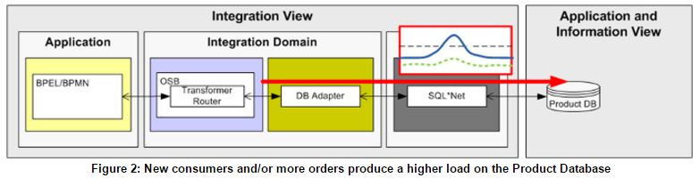
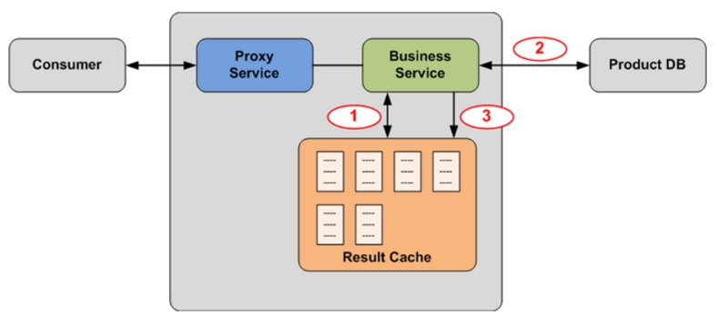
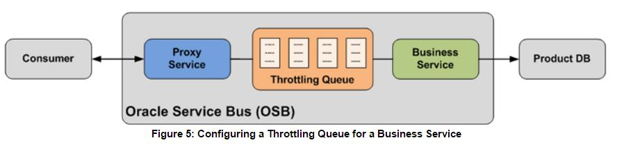
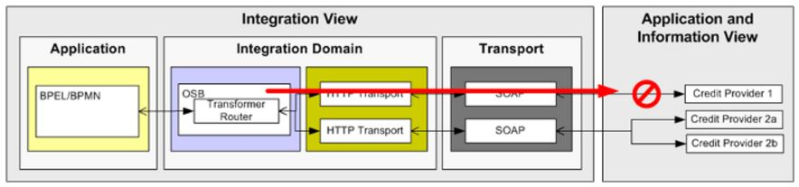
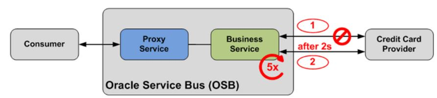
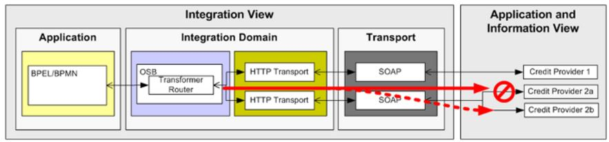
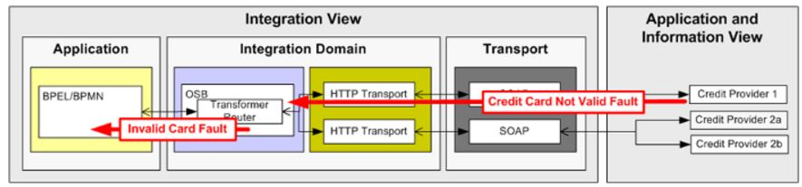
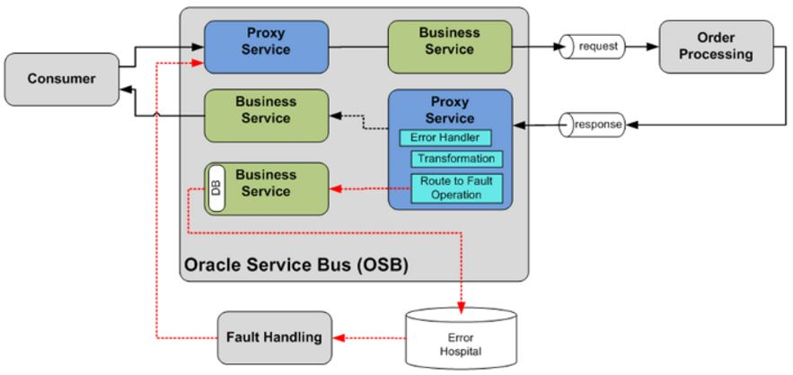
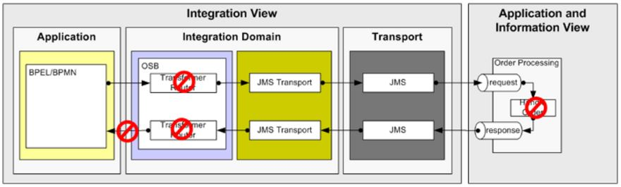
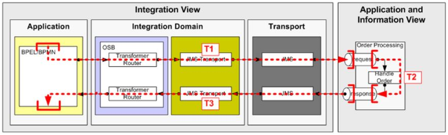

Integration
La presentazione descrive le principali pratiche da adottare in contesti di integrazione ESB, SOA o BPM per poter prevenire e gestire gli errori. In particolar modo saranno trattati 4 punti principali:
Legacy System e database sono sistemi che non si prestano a scalare in funzione del carico ricevuto. Per evitare di sovraccaricare i sistemi durante i picchi di carico è bene inserire soluzioni che prevengano il fault dei sistemi esterni.

Invece di chiamare il sistema per ogni richiesta si può salvare il risultato delle interazioni precedenti in cache ed utilizzarla per ritrovare il dato da inviare al client richiedente.
Descrizione Algoritmo:
Per ogni richiesta ricevuta si ricerca il dato richiesto in cache (1). Se non è presente in cache si effettua una richiesta esplicita al sistema esterno (2), si salva il risultato in cache (3) e si restituisce la risposta al client.

Azione:
Considerazioni:
Impatti:
Se non è possibile utilizzare la cache per la natura del dato e, si può diminuire il numero di richieste inviate per unità di tempo servizio esterno accodando in un buffer le richieste da inviare.
Descrizione Algoritmo:
Tra il client e il servizio si configura un buffer configurando il numero massimo di richieste da poter inviare in parallelo al servizio, la capacità del buffer ed il tempo di vita della richieste. Raggiunto il numero massimo di invocazioni contemporanee, tutte le successive richieste vengono salvate nel buffer e smaltite al termine delle richieste attive. Nel caso in cui il buffer si saturi o scada la richiesta in attesa, verrà restituito al client il relativo codice di errore.

Azione:
Considerazioni:
Impatti:
Durante la comunicazioni ci sono alcuni fattori che il consumatore del servizio non può controllare. Per esempio
problemi di connessione e di raggiungibilità del servizio potrebbero causare un'interruzione della lavorazione.
Risulta quindi necessario per l'"Integrator" gestire tali casistiche, evitando di interrompere l'erogazione del servizio.

In caso di non raggiungibilità del servizio invocato, lo strato d'integrazione gestisce l'errore ricevuto
e tenta un numero definito di retry, invocando ripetutamente il servizio.
Descrizione Algoritmo:
Si configura lo strato d'integrazione per gestire un numero massimo di Retry (Retry Count) in caso di non raggiungibilità
del servizio invocato. Può essere utile configuare anche un intervallo di tempo d'attesa tra i retry (Retry Iteration Interval)
configurato diversamente per ogni singolo servizio richiamato. Se il numero di invocazioni ha raggiunto il numero massimo configurato,
si ritorna l'errore al chiamante originale o si gestisce appositamente l'errore.

Azione:
Considerazioni:
Impatti:
In caso di non raggiungibilità del servizio invocato, lo strato d'integrazione tenta di invocare il servizio su differenti istanze.
Descrizione Algoritmo:
Nel flusso d'integrazione si configura un pool di endpoints per servizio. Se a seguito di una richiesta si ricevono
errori, si eseguirà nuovamente la richiesta invocando una nuova istanza del servizio.

Azione:
Considerazioni:
Impatti:
Se in seguito all'invocazione del servizio riceviamo un fault applicativo e non un'errore di comunicazione, non ha senso applicare
politiche di retry ma il fault va gestito e ritornato al client, inoltrando le informazioni necessarie alla gestione
del fault. La modalità di restituzione del fault è strettamente correlata al protocollo utilizzato dal client per invocare il layer
d'integrazione.

Una volta ricevuto il fault applicativo dal servizio invocato, si cattura e si gestisce il fault per ritornare al client
lo stesso o un nuovo fault che comprende le informazioni necessarie per la sua gestione.
Descrizione Algoritmo:
Nel caso di servizi sincroni il fault deve essere dichiarato nell'interfaccia esposta e una volta ricevuto deve essere
ritornato al client.
Nel caso in cui il client ci invochi con modalità asincrona, se riceviamo un fault applicativo si ritornerà il fault
al client tramite un apposito messaggio di callback.
Azione:
Considerazioni:
Impatti:
In alcuni contesti il client non rimane in attesa di risposta o dell'eventuale fault.
In questi casi si può storicizzare e lavorare in modo asincrono i fault archiviati.
Descrizione Algoritmo:
Se invocando il servizio si riceve un'errore applicativo, si gestisce e si storicizza il fault
in un Error Hospital. La storicizzazione permette di intervenire in modo manuale per
modificare il payload e risottomettere la richiesta o per gestire le casistiche riscontrate.

Azione:
Considerazioni:
Impatti:
Spesso si sviluppano flussi d'integrazione asincroni per mantenere basso l'accoppiamento tra i client e i provider
dei servizi. La natura asincrona dell'integrazione però introduce il rischio di perdere messaggi, sia durante l'invocazione
del servizio esterno che durante la lavorazione del messaggio nel layer d'integrazione.

Gestire in un'unica transazione distribuita l'intero flusso di gestione del messaggio.
Descrizione Algoritmo:
Sviluppare l'interfaccia esposta al client, le chiamate verso i servizi esterni e gli step intermedi con
strumenti che supportano le transazioni globali. In questo modo l'insieme delle operazioni scaturite dalla
ricezione del messaggio saranno eseguite in modo transazionale ed atomico.

Azione:
Considerazioni:
Impatti: